Redis
NoSQL概述
为什么要用NoSQL
1、单机MySQL的年代
App -> DAL(Database Access Layer) -> MySQL
90年代，一个基本的网站访问量一般不会太大，单个数据库完全足够！
那个时候，更多的去使用静态网页 html, 服务器压力较小
网站的瓶颈：
- 数据量如果太大，一个机器放不下了
- 数据的索引（MySQL B+ tree），一个机器内存放不下
- 访问量（读写混合），一个服务器承受不了
出现以上的三种情况之一，必须要晋级
2、Memcached（缓存）+ MySQL + 垂直拆分（读写分离）
网站80%的情况都在读，每次都要去查询数据库的话就十分麻烦，所以说我们希望减轻数据库的压力，我们可以使用缓存来保证效率
发展过程：优化数据结构和索引 --> 文件缓存（IO） --> Memcached（当时最热门的技术）
3、分库分表 + 水平拆分 + MySQL集群 （不同集群之间数据不同）
购买 订单 支付 三个表分开放在不同的数据库，减轻压力，放在不同集群。
4、如今
MySQL关系型数据库不够用，数据量很多，变化很快。
MySQL存储博客，图片等导致表很大，需要一种数据库来专门处理这种数据
5、目前一个基本的互联网项目
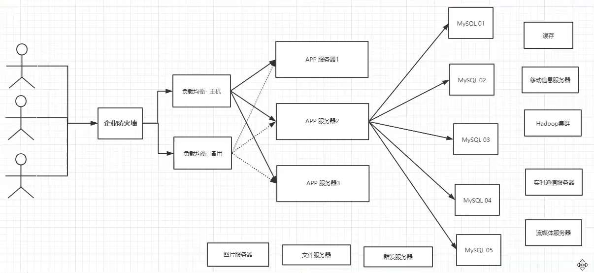
6、为什么要用NoSQL
用户的个人信息，社交网络，地理位置。用户自己产生的数据，用户日志等等爆发式增长。
这时候我们就需要使用NoSQL数据库，Nosql 可以很好的处理以上情况。
什么是NoSQL
1、NoSQL
NoSQL = Not Only SQL （不仅仅是SQL）泛指非关系型数据库
很多的数据类型用户的个人信息，社交网络，地理位置。这些数据类型的存储不需要一个固定的格式!不需要多月的操作就可以横向扩展的! Map
2、NoSQL特点
解耦！
1、方便扩展（数据之间没有关系，很好扩展）
2、大数据量高性能（Redis 可以一秒写8万次，读取11万次，NoSQL的缓存记录级，是一种细粒度的缓存，性能会比较高）
3、数据类型是多样型（不需要事先设计数据库）
4、传统RDBMS和NoSQL
传统的RDBMS
- 结构化组织
- SQL
- 数据和关系都存在单独的表中
- 操作操作，数据定义语言
- 严格的一致性
- 基础的事务
- ....
Nosql
- 不仅仅是数据
- 没有固定的查询语言
- 键值对存储，列存储， 文档存储，图形数据库（社交关系）
- 最终一致性
- CAP定理 和 BASE （异地多活）-》初级架构师
- 高性能，高可用，高可扩
- ...
5、了解：3V + 3高
大数据时代的3V:主要是描述问题的
- 海量Volume
- 多样Variety
- 实时Velocity
大数据时代的3高:主要是对程序的要求
- 高并发
- 高可拓 （随时水平拆分，机器不够了，可用扩展机器来解决）
- 高性能（保证用户体验和性能）
NoSQL的四大分类
KV键值对：
- 新浪：Redis
- 美团：Redis + Tair
- 阿里、百度：Redis + Memcache
文档型数据库（bson格式和json一样）：
- MongoDB（一般必须要掌握）\
- MongoDB是一个基于分布式文件存储的数据库，C++编写，主要用来处理大量的文档
- MongoDB是一个介于关系型数据库和非关系型数据库中间的产品，MongoDB是非关系型数据库中功能最丰富的，最像关系型数据库的。
- ConthDB
列存储数据库
- HBase（分布式文件系统）
图数据库
- neo4j
- InfoGrid
Redis 入门
概述
Redis是什么？
Redis（Remote Dictionary Server )，即远程字典服务.
是一个开源的使用ANSI C语言 编写、支持网络、可基于内存亦可持久化的日志型、Key-Value 数据库 ，并提供多种语言的API。
免费和开源。当下最热门的NoSQL技术之一，也被人们称之为结构化数据库
Redis能干嘛？
1、内存存储、持久化，内存中是断电即失，所有持久化很重要（RDB,AOF）
2、效率高，可用用于高速缓存
3、发布订阅系统
4、地图信息分析
5、计时器、计数器（浏览量）
6、...
特性
1、多样的数据类型
2、持久化
3、集群
4、事务
...
学习中需要用到的东西
1、官网：https://redis.io/
2、中文站：http://www.redis.cn/
3、下载地址：通过官网下载即可
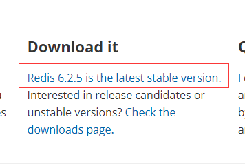
注意：Window在 Github下载（停更很久了）
Redis推荐都是在Linux服务器上搭建，基于Linux学习
Windows安装
1、下载压缩包：https://github.com/MicrosoftArchive/redis/tags
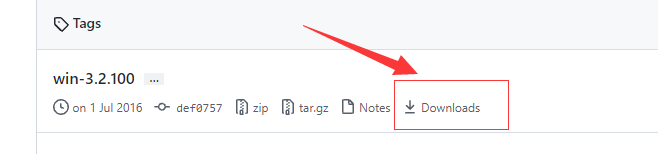
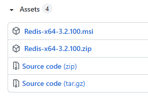
2、解压到相应文件夹
3、开启Redis，双击redis-server.exe即可
4、使用Redis-cli.exe 来连接redis
5、输入ping命令测试连接
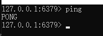
推荐使用Linux去开发，不推荐windows
Linux安装
1、官网点击直接下载安装包
2、移动安装包到/opt目录并解压
mv redis-6.2.5.tar.gz /opt
tar -zxvf redis-6.2.5.tar.gz
cd redis-6.2.5
3、进入解压后的文件，可以看到redis的配置文件
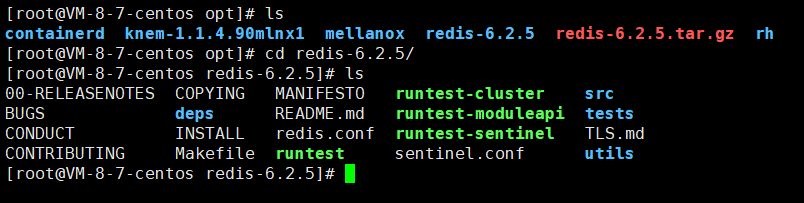
4、基本的环境安装
yum install gcc-c++
make # 编译
make install
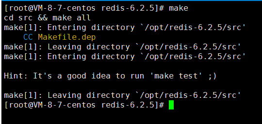
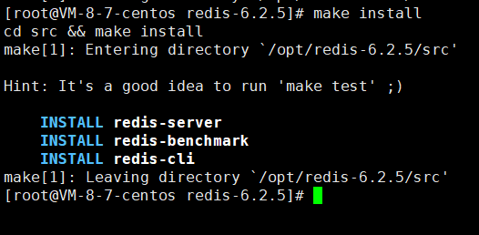
5、redis的默认安装路径 /usr/local/bin
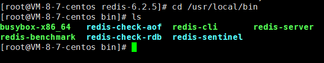
6、将redis配置文件（/opt/redis-6.2.5/redis.conf），复制到/usr/local/bin/myconf下（没有则创建一个）
cp /opt/redis-6.2.5/redis.conf usr/local/bin/myconf
7、redis默认不是后台启动，修改配置文件
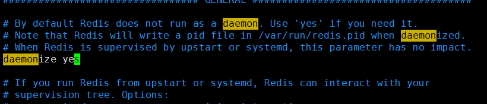
将daemonize 修改为 yes
8、启动Redis服务并测试
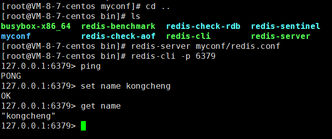
redis-server myconf/redis.conf
redis-cli -p 6379 # 使用Redis客户端进行连接
# 连接成功
9、查看redis的进程是否开启
ps -ef|grep redis
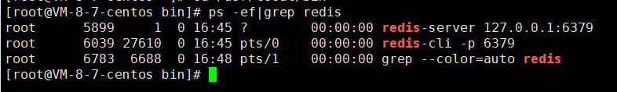
11、关闭Redis服务
shutdown
exit
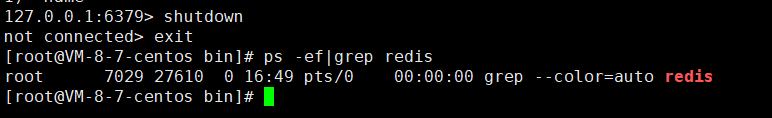
测试性能
redis-benchmark是一个压力测试工具
官方自带的性能测试工具
redis-benchmark 命令参数：
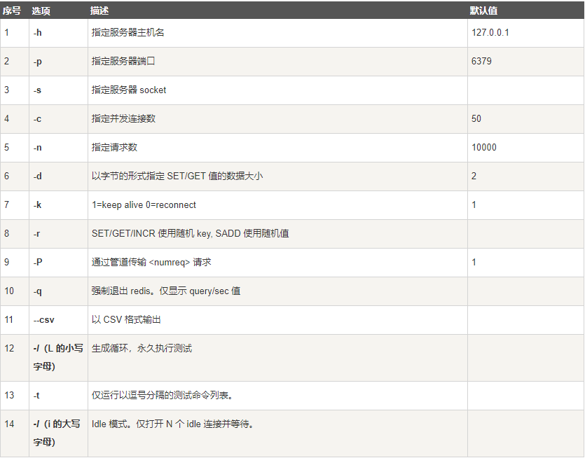
测试：
# 100个并发连接 100000请求
redis-benchmark -h localhost -p 6379 -c 100 -n 100000
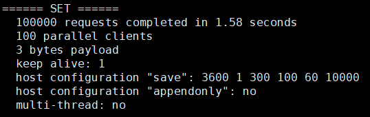
10w个请求
100个并发客户端
每次写入3个字节
只有一台服务器来处理这些请求，单机性能
基础的知识（面试题内容）
1、redis默认有16个数据库
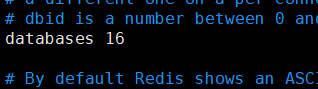
2、默认使用的是第0个
可以使用select来切换数据库
127.0.0.1:6379> select 3 #切换到3数据库
OK
127.0.0.1:6379[3]> DBSIZE # 查看数据库大小
(integer) 0
3、Redis在4.0之前是单线程运行的的，之后开始支持多线程
Redis是基于内存操作，CPU不是Redis性能瓶颈，Redis的瓶颈是根据机器的内存和网络带宽；
Redis4.0之前使用单线程的原因：
1、单线程模式方便开发和调试；
2、Redis内部使用了基于epoll的多路复用；
3、Redis主要的性能瓶颈是内存或网络带宽。
Redis为什么单线程还这么快？
- 基于内存操作：Redis的所有数据都存在内存中，因此所有的运算都是内存级别的，所以它的性能比较高。
- 数据结构简单：Redis的数据结构比较简单，是为Redis专门设计的，而这些简单的数据结构的查找和操作的时间复杂度都是O(1)。
- 多路复用和非阻塞IO：Redis使用IO多路复用功能来监听多个socket连接的客户端，这样就可以使用一个线程来处理多个情况，从而减少线程切换带来的开销，同时也避免了IO阻塞操作，从而大大提高了Redis的性能。
- 避免上下文切换：因为是单线程模型，因此就避免了不必要的上下文切换和多线程竞争，这就省去了多线程切换带来的时间和性能上的开销，而且单线程不会导致死锁的问题发生。（CPU上下文切换：耗时的操作）
IO多路复用是什么？
套接字的读写方法默认是阻塞的，例如当调用读取操作read方法时，缓冲区没有任何数据，那么这个线程会卡在这里，直到缓冲区有数据或者连接被关闭时，read方法才会返回，该线程才能继续处理其他业务。
但这样显然就降低了程序的执行效率，而Redis使用的时非阻塞的IO，这就意味着IO的读写流程不再是阻塞的，读写方法都是瞬间完成并且返回的，也就是它会采用能读多少就读多少、能写多少就写多少的策略来执行IO操作，这显然更符合我们对性能的追求。
但这种非阻塞的IO也面临一个问题，那就是当我们执行读取操作时，有可能只读取了一部分数据；同理写数据也是这种情况，当缓冲区满了，而我们的数据还没有写完，那么生效的数据何时写就成了一个问题。
而IO的多路复用就是解决上面的这个问题的，使用IO多路复用最简单的方式就是使用select函数，此函数是操作系统提供给用户程序的API接口，用于监控多个文件描述符的可读和可写情况的，这样就可以监控到文件描述符的读写事件了。当监控到相应的时间之后就可以通知线程处理相应的业务了，这样就保证了Redis读写功能的正常执行。
【不过现在的操作系统已经基本上不适用select函数了，改为调用epoll函数（Linux）了，macOS则是使用Kqueue（继承与Unix），因为select函数在文件描述符非常多的时候性能非常差。】
Redis6.0中的多线程？
Redis单线程的优点非常，不但降低了Redis内部实现的负责性，也让所有操作都可以在无锁的情况下进行，并且不存在死锁和线程切换带来的性能以及时间上的消耗；但是其缺点也很明显，单线程机制导致Redis的QPS（Query Per Second，每秒查询数）很难得到有效的提高（虽然够快了，但人毕竟还是要有更高的追求的）。
Redis在4.0版本中虽然引入了多线程，但是此版本的多线程只能用于大数据量的异步删除，对于非删除操作的意义并不是很大。
如果我们使用Redis多线程就可以分摊Redis同步读写IO的压力，以及充分利用多核CPU资源，并且可以有效的提升Redis的QPS。在Redis中虽然使用了IO多路复用，并且是基于非阻塞的IO进行操作的，但是IO的读写本身是阻塞的。比如当socket中有数据时，Redis会先将数据从内核态空间拷贝到用户态空间，然后再进行相关操作，而这个拷贝过程是阻塞的，并且当数据量越大时拷贝所需要的的时间就越多，而这些操作都是基于单线程完成的。
因此在Redis6.0中新增了多线程的功能来提高IO的读写性能，它的主要实现思路是将主线程的IO读写任务拆分给一组独立的线程去执行，这样就可以使用多个socket的读写并行化了，但Redis的命令依旧是主线程串行执行的。
但是注意：Redis6.0是默认禁用多线程的，但可以通过配置文件redis.conf中的io-threads-do-reads 等于 true 来开启。但是还不够，除此之外我们还需要设置线程的数量才能正确地开启多线程的功能，同样是修改Redis的配置，例如设置 io-threads 4，表示开启4个线程。
【关于线程数的设置，官方的建议是如果为4核CPU，那么设置线程数为2或3；如果为8核CPU，那么设置线程数为6.总之线程数一定要小于机器的CPU核数，线程数并不是越大越好。】
关于Redis的性能，Redis的作者在2019年的RedisConf大会上提到，Redis6.0引入的多线程IO特性对性能的提升至少是一倍以上。国人也有在阿里云使用4个线程的Redis版本和单线程的Redis进行比较测试，发现测试结果和Redis作者说的一致，性能基本可以提高一倍。
五大数据类型
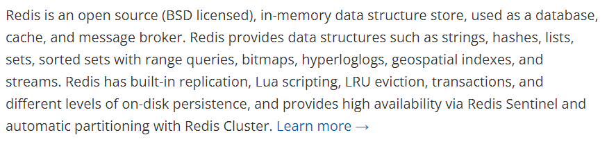
Redis 是一个开源（BSD许可）的，内存中的数据结构存储系统，它可以用作数据库、缓存和消息中间件。 它支持多种类型的数据结构，如 字符串（strings）， 散列（hashes）， 列表（lists）， 集合（sets）， 有序集合（sorted sets） 与范围查询， bitmaps， hyperloglogs 和 地理空间（geospatial） 索引半径查询。 Redis 内置了 复制（replication），LUA脚本（Lua scripting）， LRU驱动事件（LRU eviction），事务（transactions） 和不同级别的 磁盘持久化（persistence）， 并通过 Redis哨兵（Sentinel）和自动 分区（Cluster）提供高可用性（high availability）。
Redis-Key
常用命令：
set key value # set
get key # get
key * # 查看当前数据库所有的key
flushdb # 清空当前数据库的
FLUSHALL # 清空所有数据库
EXISTS KEY # 检查是否存在该KEY
move key 1 # 将 key 移动到1数据库
del key # 删除key
EXPIRE KEY 10 # key 在10s后将会被清除
ttl key # 查看当前key的剩余时间
type key # 查看当前key的类型
不清楚的命令可以去官网查
String（字符串）
所有命令不区分大小写
APPEND key "xxx" # 向一个key后追加xxx内容，如果当前key不存在，就相当于set key
key1 = "hello"
APPEND key1 "world"
key1 = "helloworld"
STRLEN key # 输出key的长度
增加减少命令：
incr key # key值+1 ， i++
INCRBY key 10 # key值+10 , i+=
decr key # key值-1
DECRBY key # key值-10 , i-=
字符串范围
GETRANGE key 0 3 # 截取字符串[0,3]
GETRANGE key 0 -1 # 拿到全部字符串,和get key一样
字符串范围设置
SETRANGE key 1 xx # 替换指定位置的字符串
setex key 30 "hello" # 设置一个过期时间为30s的key "hello" (set with expire 设置过期时间)
setnx key "xxx" # (set if not exist) 不存在 再设置key "xxx" 。
批量set、get
mset k1 v1 k2 v2 k3 v3
mget k1 k2 k3
msetnx k1 v1 k4 v4 # msetnx 是一个原子性的操作，要么一起成功， 要么一起失败。若刚才已经设置k1 则该操作执行失败
设置对象
set user:1 {name:zhangsan,age:3} # 设置一个user:1对象 值为json字符来保存一个对象
# 这里的key是一个巧妙的设计：user:{id}:{filed}
mset use1:1:name zhangsan user:1:age 2
mget use1:1:name ser:1:age
getset
127.0.0.1:6379> getset db redis # 先get再set
(nil)
127.0.0.1:6379> get db
"redis"
127.0.0.1:6379> getset db MongoDB
"redis"
127.0.0.1:6379> get db
"MongoDB"
String类似的使用场景：value除了是我们的字符串还可以是我们的数字
- 计数器
- 统计多单位的数量 uid:323131:follow 0
- 粉丝数
- 对象缓存存储
List
在redis里面，可以用list实现栈、队列、阻塞队列
```bash 127.0.0.1:6379> LPUSH list one # 将一个值或者多个值，插入到列表头部 (integer) 1 127.0.0.1:6379> LPUSH list two (integer) 2 127.0.0.1:6379> LPUSH list three (integer) 3 127.0.0.1:6379> LRANGE list 0 -1 # 获取list中的值 1) "three" 2) "two" 3) "one" 127.0.0.1:6379> LRANGE list 0 1 # 通过区间获取具体的值 1) "three" 2) "two" 127.0.0.1:6379> RPUSH list right (integer) 4 127.0.0.1:6379> LRANGE list 0 -1 1) "three" 2) "two" 3) "one" 4) "right"
Lpop Rpop 127.0.0.1:6379> Lpop list # 移除list的第一个元素 "three" 127.0.0.1:6379> Rpop list # 移除list的最后一个元素 "right" 127.0.0.1:6379> LRANGE list 0 -1 1) "two" 2) "one"
Lindex 127.0.0.1:6379> lindex list 0 "two" 127.0.0.1:6379> lindex list 1 # 通过下标获得list中的某个值 "one"
Llen list # 返回列表的长度
lrem list 1 one # 移除list中1个one，精确匹配 lrem list 2 three # 移除list中2个three
ltrim list 1 2 # 截取[1,2]中的元素，list被改变，只剩下截取的元素
lset list 0 value # list中0号元素存在时，将该下标的值替换为value，更新操作
LINSERT list before "b" "a" # list中在 b 前面添加 a ```
LPUSH相当于从list左边放（头插法），RPUSH相当于从LIST右边放（尾插法）
小结：
- list 实际上是一个链表，before Node after , left , right都可以插入值
- 如果key不存在，创建新的链表
- 如果key存在，新增内容
- 如果移除了所有值，空链表，也代表不存在!
- 在两边插入或者改动值，效率最高!中间元素，相对来说效率会低一点~
可以应用为消息队列：Lpush Rpop ，栈（Lpush Lpop）
Set（集合）
set中的值不能重复
sadd set "hello" # 往set集合中添加hello
sadd set "kongcheng"
smembers set # 输出set中所有元素
sismember list hello # 判断hello是否在set集合中
scard set # 获取set集合中元素个数
srem set "hello" # 移除set集合中的"hello"
# set 为无序不重复集合
srandmember set # 随机抽取出一个元素
srandmember set 2 # 随机抽取出指定个数元素
spop set # 随机删除一些set集合中的元素
smove set1 set2 "hello" # 将指定元素移动到另外的set集合中
sdiff set1 set2 # (set1 - set1与set2的交集)差集
sinter set1 set2 # set1 与 set2 的交集
sunion set1 set2 # set1 与 set2 的并集
Hash
Map集合，key - map
hset hash field1 kongcheng # set
hmset hash field1 hello field2 world
hget hash field1 # get
hmget hash field1 field2
hgetall hash # 获取所有的key-value
hdel hash field1 # 删除指定key，对应value也消失
hlen hash # 得到长度
hexists hash field1 # 判断指定key是否存在
hkeys hash # 获取所有的key
hvals hash # 获取所有的value
hincrby hash field11 1 # 增加
hsetnx hash field hello # set if not exist
Zset（有序集合）
在Set的基础上，增加了一个值：
set k1 v1
zset k1 score1 v1
zadd set 1 one # 添加一个值
zadd set 2 two 3 three # 添加多个值
zrange set 0 -1
# 排序如何实现
zadd salary 2500 zhangsan
zadd salary 5000 lisi
zadd salary 500 kc
#zrangebyscore set min max
zrangebyscore salary -inf +inf # 从小到大逆序排列，最小的值到最大值排序，inf相当于无穷
zrangebyscore salary -inf 2500 withscores # (输出(-∞, 2500] 之间的元素，并带上分数)
zrevrangebyscore salary 0 -1 # 从大到小逆序排列
# 默认情况是小于等于和大于等于，可以通过在前面加上(表示小于或者大于
zrangebyscore salary (1 (2
zrange set 0 -1 # 查看全部元素
zrevrange salary 0 -1 # 从大到小逆序排列
zrem set hello # 移除指定元素
zcard set # 获取有序集合中的个数
案例思路：
1、重要消息 带权重进行判断
2、排行榜应用实现
三种特殊数据类型
geospatial 地理位置
朋友的定位，附件的人，打车距离计算
Redis 的 Geo 在Redis3.2版本 就推出了，这个功能可以推算地理位置的信息，两地之间的距离，方圆几里的人。
六个命令：
geoadd # 添加地理位置
geoadd key 经度 纬度 city
geopos # 获得地理位置
geopos key city # 得到city的经纬度
-
有效的经度从-180度到180度。
-
有效的纬度从-85.05112878度到85.05112878度。
当坐标位置超出上述指定范围时，该命令将会返回一个错误。
geodist # 返回两个给定位置之间的距离
geodist key city1 city2 单位 # 查看两个city之间的距离
dfdfd# 指定单位的参数 unit 必须是以下单位的其中一个： - m 表示单位为米。 - km 表示单位为千米。 - mi 表示单位为英里。 - ft 表示单位为英尺。
georadis # 以给定的经纬度为中心， 返回键包含的位置元素当中， 与中心的距离不超过给定最大距离的所有位置元素。
# 单位与geodist单位相同
georadius key 经度 纬度 半径 单位 其他参数
georadiusbymember key member radius m|km|ft|mi [WITHCOORD] [WITHDIST] [WITHHASH] [COUNT count] # 指定成员的位置被用作查询的中心。
其他参数
- WITHDIST: 在返回位置元素的同时， 将位置元素与中心之间的距离也一并返回。 距离的单位和用户给定的范围单位保持一致。
- WITHCOORD: 将位置元素的经度和维度也一并返回。
- WITHHASH: 以 52 位有符号整数的形式， 返回位置元素经过原始 geohash 编码的有序集合分值。 这个选项主要用于底层应用或者调试， 实际中的作用并不大。 命令默认返回未排序的位置元素。 通过以下两个参数， 用户可以指定被返回位置元素的排序方式：
- ASC: 根据中心的位置， 按照从近到远的方式返回位置元素。
- DESC: 根据中心的位置， 按照从远到近的方式返回位置元素。
基于zset数据类型，可以通过zset的基本指令来操作key。
zrange key 0 -1 # 可查询key中所有city
Hyperloglogs
什么是基数？
A {1, 3, 5, 7, 8, 7}
B {1, 3, 5, 7, 8}
基数（不重复的元素）= 5 ，可以接受误差
简介：
Redis 2.8.8版本就更新了Hyperloglogs数据结构
Redis Hyperloglog 基数统计的算法
优点：占用的内存是固定的，2^64 不同的元素的技术，（每个HyperLogLog结构需要12K字节再加上key本身的几个字节），如果要从内存角度来比较的话，Hyperloglog首选。
网页的 UV (一个人访问一个网站多次，但是还是算作一个人)
传统的方式，set 保存用户的ID，然后就可以统计 set 中的元素数量作为标准判断！
这个方式如果保存大量的用户id，就会比较麻烦，我们的目的是为了计数，而不是保存用户ID
0.81% 错误率！ 统计UV任务，可以忽略不计的。
常用命令
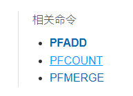
1、PFADD
PFADD key element [element ...]
2、PFCOUNT
当参数为一个key时,返回存储在HyperLogLog结构体的该变量的近似基数，如果该变量不存在,则返回0.
当参数为多个key时，返回这些HyperLogLog并集的近似基数，这个值是将所给定的所有key的HyperLoglog结构合并到一个临时的HyperLogLog结构中计算而得到的.
PFCOUNT key [key ...] # 统计一个key中基数
3、PFMERGE
将多个 HyperLogLog 合并（merge）为一个 HyperLogLog ， 合并后的 HyperLogLog 的基数接近于所有输入 HyperLogLog 的可见集合（observed set）的并集.
PFMERGE destkey sourcekey [sourcekey ...] # 合并两个key，destkey为目标key
4、测试使用
redis> PFADD hll1 foo bar zap a # 创建第一组元素
(integer) 1
redis> PFADD hll2 a b c foo # 创建第二组元素
(integer) 1
redis> PFMERGE hll3 hll1 hll2 # 合并两组，得到两个组的并集
OK
redis> PFCOUNT hll3
(integer) 6
redis>
如果允许容错，那么可以使用Hyperloglog
如果不允许容错，使用set或者自己的数据类型
Bitmaps
位存储
统计性别信息：0 1 0 0 1 1 0 （男、女）
统计用户信息：登录、未登录 or 打卡、未打卡
两个状态的，都可以使用Bitmaps
Bitmaps 位图，数据结构。都是操作二进制位来进行记录，就只有0和1两个状态！
常用命令
1、setbit
SETBIT key offset value
2、getbit
GETBIT key offset
3、bitcount
BITCOUNT key [start end]
事务
Redis事务本质：一组命令的集合！一个事务中的所有命令都会被序列化，在事务执行过程中，会按照顺序执行。
一次性、顺序性、排他性，执行一些列的命令
------ 队列 set set set 执行 ------
重点：
- Redis单条命令式保存原子性，但是事务不保证原子性！
- Redis事务没有隔离级别的概念
- 所有的命令在事务中，并没有直接被执行，只有发起执行命令的时候才会执行
Redis的事务:
- 开启事务（ multi ）
- 命令入队（ ... ）
- 执行事务（ exec ）
正常事务执行顺序：
> MULTI # 开启事务
OK
# 命令入队
> INCR foo
QUEUED
> INCR bar
QUEUED
> EXEC # 执行事务
1) (integer) 1
2) (integer) 1
放弃事务：
当执行 DISCARD命令时， 事务会被放弃， 事务队列会被清空， 并且客户端会从事务状态中退出：
> SET foo 1
OK
> MULTI
OK
> INCR foo
QUEUED
> DISCARD # 取消事务
OK
> GET foo
"1"
编译性错误
代码有问题，命令有错，事务中所有的命令都不会被执行
运行时异常
如果事务队列中存在语法性，那么执行命令的时候，其他命令是可以正常执行的，错误命令抛出异 常!
监控 watch（面试常问）
悲观锁：
- 很悲观，什么时候都会出问题，无论做什么都会加锁
乐观锁：
- 很乐观，认为什么时候都不会出问题，所有不会上锁，更新数据的时候去判断一下在此期间是否有人修改过这个数据
- 获取version
- 更新的时候比较version
Redis监控测试
watch：标记所有指定的key 被监视起来，在事务中有条件的执行（乐观锁）。
被 WATCH的键会被监视，并会发觉这些键是否被改动过了。 如果有至少一个被监视的键在 EXEC 执行之前被修改了， 那么整个事务都会被取消， EXEC返回nil-reply来表示事务已经失败。
WATCH key [key ...]
Jedis
使用java来操作redis
什么是Jedis
Jedis 是 Redis 官方推荐的 java 连接开发工具，使用java操作 Redis 的中间件。，需要对 Jedis 十分的熟悉。
导包
<!-- https://mvnrepository.com/artifact/redis.clients/jedis -->
<dependency>
<groupId>redis.clients</groupId>
<artifactId>jedis</artifactId>
<version>3.3.0</version>
</dependency>
<dependency>
<groupId>com.alibaba</groupId>
<artifactId>fastjson</artifactId>
<version>1.2.62</version>
</dependency>
编码测试
- 连接数据库
- 操作命令
- 断开连接
public class TestJedis {
public static void main(String[] args) {
Jedis jedis = new Jedis("127.0.0.1", 6379);
System.out.println(jedis.ping());
}
}
输出：
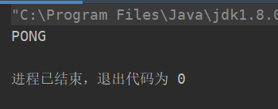
常用的API
String
List
Set
Hash
Zset
所有的API命令与上述命令相同
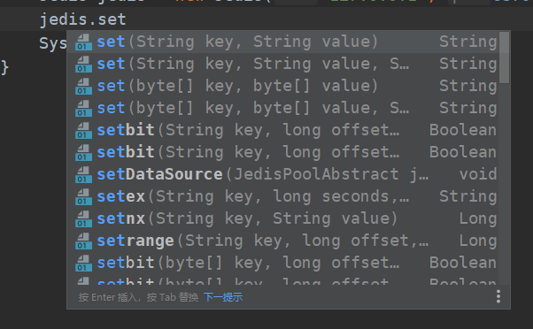
Jedis事务
public class TestJedis {
public static void main(String[] args) {
Jedis jedis = new Jedis("127.0.0.1", 6379);
JSONObject json = new JSONObject();
json.put("user1", "kongcheng");
json.put("user2", "kc");
String str = json.toJSONString();
//开启事务
Transaction multi = jedis.multi();
try {
multi.set("user1", str);
multi.set("user2", str);
multi.exec();
} catch (Exception e) {
multi.discard();
e.printStackTrace();
} finally {
System.out.println(jedis.get("user1"));
//System.out.println(jedis.get("user2"));
jedis.close();
}
}
}
SpringBoot整合
说明：在SpringBoot2.x 之后，原来使用的jedi 被替换为了lettuce
jedis : 采用的直连，多个线程操作的话，是不安全的，如果想要避免不安全的话，使用 jedis pool 连接池。更像BIO模式
lettuce : 采用netty， 实例可以在多个线程中进行共享，不存在线程不安全的情况，可以减少线程数据了，更像NIO模式
源码分析：
@Bean
@ConditionalOnMissingBean(
name = {"redisTemplate"} //我们可以自己定义一个redisTemplate来替换合格默认的。
)
@ConditionalOnSingleCandidate(RedisConnectionFactory.class)
public RedisTemplate<Object, Object> redisTemplate(RedisConnectionFactory redisConnectionFactory) {
//默认的 RedisTemplate 没有过多的设置，redis 对象都是需要序列化
//两个泛型都是 Object, Object 的类型， 我们之后使用需要强制转换<String, Object>
RedisTemplate<Object, Object> template = new RedisTemplate();
template.setConnectionFactory(redisConnectionFactory);
return template;
}
@Bean
@ConditionalOnMissingBean // 由于 String 是 redis 中最常使用的类型，所有单独提出来了一个Bean
@ConditionalOnSingleCandidate(RedisConnectionFactory.class)
public StringRedisTemplate stringRedisTemplate(RedisConnectionFactory redisConnectionFactory) {
StringRedisTemplate template = new StringRedisTemplate();
template.setConnectionFactory(redisConnectionFactory);
return template;
}
整合测试
1、导入依赖
<dependency>
<groupId>org.springframework.boot</groupId>
<artifactId>spring-boot-starter-data-redis</artifactId>
</dependency>
2、配置连接
# 配置redis
spring.redis.host=127.0.0.1
spring.redis.port=6379
3、测试
@SpringBootTest
class RedisSpringbootApplicationTests {
@Autowired
private RedisTemplate redisTemplate;
@Test
void contextLoads() {
//redisTemplate 操作不同的数据类型，和基本命令相同
//opsForValue() 操作字符串 类似String
//opsForList() 操作List 类似List
//opsForHash()
//opsForGeo()
//....
//除了基本的操作，常用的方法可以直接通过redisTemplate来操作，比如事务和基本的CRUD
//获取redis的连接对象
//RedisConnection connection = redisTemplate.getConnectionFactory().getConnection();
//connection.flushDb();
//connection.flushAll();
redisTemplate.opsForValue().set("key", "kc");
System.out.println(redisTemplate.opsForValue().get("key"));
}
}
4、自定义redisTemplate 序列化
@Configuration
public class RedisConfig {
@Bean("myRedisTemplate")
public RedisTemplate<String, Object> redisTemplate(RedisConnectionFactory redisConnectionFactory) {
RedisTemplate<String, Object> template = new RedisTemplate();
Jackson2JsonRedisSerializer<Object> jackson2JsonRedisSerializer = new Jackson2JsonRedisSerializer<Object>(
Object.class);
ObjectMapper om = new ObjectMapper();
om.setVisibility(PropertyAccessor.ALL, JsonAutoDetect.Visibility.ANY);
om.activateDefaultTyping(LaissezFaireSubTypeValidator.instance ,
ObjectMapper.DefaultTyping.NON_FINAL, JsonTypeInfo.As.PROPERTY);
StringRedisSerializer stringRedisSerializer = new StringRedisSerializer();
jackson2JsonRedisSerializer.setObjectMapper(om);
template.setKeySerializer(stringRedisSerializer);
template.setHashKeySerializer(stringRedisSerializer);
template.setValueSerializer(jackson2JsonRedisSerializer);
template.setHashValueSerializer(jackson2JsonRedisSerializer);
template.setConnectionFactory(redisConnectionFactory);
template.afterPropertiesSet();
return template;
}
}
5、编写RedisUtils工具类，避免使用原生redisTemplate
可在CSDN直接找别人封装好的，然后导入上面第4步自定义序列化的redisTemplate
Redis.conf 详解
启动的时候，就通过配置文件来启动！
单位
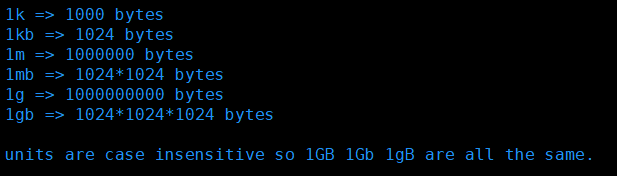
1、配置文件 unit单位对大小写不敏感
包含（INCLUDES)
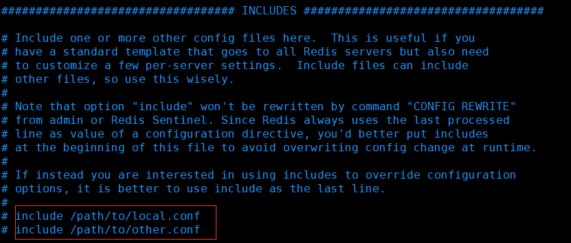
就是好比我们学习Spring中的Import、include
网络（NETWORK）
bind 127.0.0.1 -::1 # 绑定的ip
protected-mode yes # 保护模式
port 6379 # 端口设置
通用（GENERAL)
daemonize yes # 以守护进程的方式来运行，默认是no，我们需要自己开启为yes
pidfile /var/run/redis_6379.pid # 如果以后台方式运行，我们就需要指定一个pid 文件
# 日志
# Specify the server verbosity level.
# This can be one of:
# debug (a lot of information, useful for development/testing)
# verbose (many rarely useful info, but not a mess like the debug level)
# notice (moderately verbose, what you want in production probably) 生产环境
# warning (only very important / critical messages are logged)
loglevel notice
logfile "" # 日志的文件位置名
databases 16 # 数据库的数量，默认是 16 个数据库
always-show logo yes # 是否总是显示logo
快照（SNAPSHOTTING）
持久化，在规定的时间内，执行了多少次操作，则会持久到文件 .rdb .aof
redis是内存数据库，如果没有持久化，那么数据断电及失
# 如果3600s内，如果至少有1个key进行了修改，我们就进行持久化操作
save 3600 1
# 如果300s内，如果至少有100个key进行了修改，我们就进行持久化操作
save 300 100
# 如果60s内，如果至少有10000个key进行了修改，我们就进行持久化操作
save 60 10000
# 我们之后学习持久化，会自己定义这个测试
stop-writes-on-bgsave-error yes # 持久化如果出错，是否还需要继续工作
rdbcompression yes # 是否压缩 rdb 文件，需要消耗一些cpu资源
rdbcompression yes # 保存rdb文件的时候，进行错误的检查校验
dir ./ # rdb 文件保存的目录
复制（REPLICATION）
安全（SECURITY）
requirepass 123456 # 设置密码
# redis-cli中输入密码指令
auth 123456
config set requirepass 123456 # 命令行输入设置密码
客户端（CLIENTS)
maxclients # 最大连接客户端数量
内存（MEMORYMANAGEMENT）
maxmemory <bytes> # redis 配置最大的内存容量
maxmemory-policy noeviction # 内存到达上限之后的处理策略
1、volatile-lru -> 只对设置了过期时间的key进行LRU（默认值）
2、allkeys-lru -> 删除LRU算法的KEY
3、volatile-lfu -> 只对设置了过期时间的key进行LFU
4、allkeys-lfu -> 删除LFU算法的KEY
5、volatile-random -> 随机删除即将过期key
6、allkeys-random -> 随机删除
7、volatile-ttl -> 删除即将过期的
8、noeviction -> 永不过期，返回错误
APPEND ONLY aof配置
appendonly no # 默认是不开启aof模式的。默认是使用rdb方式持久化的，在大部分所有的情况下，rdb完全够用
appendfilename "appendonly.aof" # 持久化的文件的名字
appendfsync always # 每次修改都会sync ，消耗性能
appendfsync everysec # 每秒执行一次 sync ， 可能会丢失这1s的数据
appendfsync no # 不执行sync， 这个时候操作系统自己同步数据，速度最快
Redis持久化
面试和工作，持久化都是重点！
Redis是内存数据库，如果不将内存中的数据库状态保存到磁盘，那么一旦服务器进程退出，服务器中的数据库状态也会消失。所以Redis提供了持久化功能!
RDB（Redis DataBase）
什么是RDB
主从复制中，rdb就是备用了，从机上面。
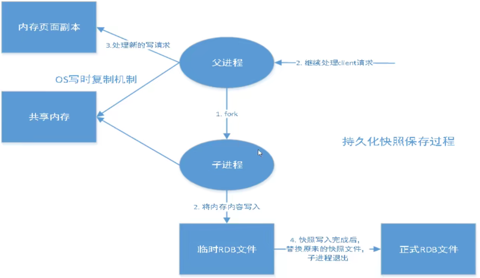
在指定的时间间隔内将内存中的数据集快照写入磁盘，也就是行话讲的Snapshot快照，它恢复时是将快照文件直接读到内存里。
Redis会单独创建 ( fork )一个子进程来进行持久化，会先将数据写入到一个临时文件中，待持久化过程都结束了，再用这个临时文件替换上次持久化好的文件。整个过程中，主进程是不进行任何IO操作的。这就确保了极高的性能。如果需要进行大规模数据的恢复，且对于数据恢复的完整性不是非常敏感，那RDB方式要比AOF方式更加的高效。RDB的缺点是最后一次持久化后的数据可能丢失。我们默认的就是RDB，一般情况下不需要修改这个配置。
有时候在生产环境我们会将这个文件进行备份
RDB保存的文件是 dump.rdb 都是在我们的配置文件 ：快照中配置
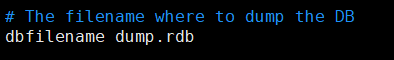
触发机制
1、save的规则满足的情况下，会自动触发rdb规则
2、执行 flushall 命令， 也会触发我们的rdb规则
3、退出redis ， 也会产生 rbd 文件
备份就自动生成一个 dump.rdb
恢复rdb文件
1、只需要将rdb文件放在我们redis启动目录（redis-server同级目录）就可以，redis启动的时候会自动检查dump.rdb 恢复其中的数据
2、查看需要存在的位置
127.0.0.1:6379> config get dir
1) "dir"
2) "/usr/local/bin" # 如果在这个目录下存在 dump.rdb 文件，启动就会自动恢复其中的数据
优缺点
优点：
1、适合大规模的数据恢复！ dump.rdb
2、对数据的完整性要求不高
缺点：
1、需要一定的时间间隔进程操作，如果redis意外宕机了，最后一次修改数据就丢失了
2、fork进程的时候，会占用一定的内存空间
AOF ( Append Only FiLE)
将我们的所有的命令都记录下来，history，恢复的时候就把这个文件全部在执行一遍。
AOF是什么
以日志的形式来记录每个写操作，将Redis执行过的所有指令记录下来(读操作不记录)，只许追加文件但不可以改写文件，redis启动之初会读取该文件重新构建数据，换言之，redis重启的话就根据日志文件的内容将写指令从前到后执行一次以完成数据的恢复工作
AOF保存的是 appendonly.aof 文件
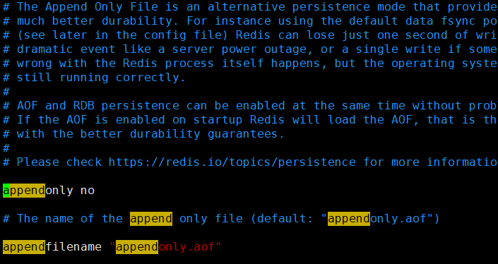
默认是不开启的，我们需要手动进行配置!我们只需要将appendonly改为yes就开启了aof !
如果这个 appendonly.aof 文件有错误，此时redis启动不了，需要修复这个aof文件
redis提供了工具 redis-check-aof
redis-check-aop --fix
优缺点
优点：
1、每一次修改都同步，文件的完整性更好；
2、每秒同步一次，可能会丢失一秒的数据
3、从不同步、效率最高
缺点：
1、相对于数据文件来说，aof 远远大于 rdb，修复的速度也比 rdb 慢
2、aof 的运行效率也要比 rdb 慢，所有默认的配置就是 rbd 持久化
扩展
1、RDB持久化方式能够在指定的时间间隔内对你的数据进行快照存储
2、AOF持久化方式记录每次对服务器写的操作，当服务器重启的时候会重新执行这些命令来恢复原始的数据，AOF命令以Redis 协议追加保存每次写的操作到文件末尾，Redis还能对AOF文件进行后台重写，使得AOF文件的体积不至于过大。
3、只做缓存，如果你只希望你的数据在服务器运行的时候存在，你也可以不使用任何持久化
4、同时开启两种持久化方式
- 在这种情况下，当redis重启的时候会优先载入AOF文件来恢复原始的数据，因为在通常情况下AOF文件保存的数据集要比RDB文件保存的数据集要完整。
- RDB的数据不实时，同时使用两者时服务器重启也只会找AOF文件，那要不要只使用AOF呢 ? 作者建议不要，因为RDB更适合用于备份数据库(AOF在不断变化不好备份），快速重启，而且不会有AOF可能潜在的Bug，留着作为一个万一的手段。
5、性能建议
- 因为RDB文件只用作后备用途，建议只在Slave上持久化RDB文件，而且只要15分钟备份一次就够了，只保留save 900 1这条 规则。
- 如果Enable AOF，好处是在最恶劣情况下也只会丢失不超过两秒数据，启动脚本较简单只load自己的AOF文件就可以了，代价一是带来了持续的lO，二是AOF rewrite的最后将rewrite过程中产生的新数据写到新文件造成的阻塞几乎是不可避免的。只要硬盘许可，应该尽量减少AOF rewrite的频率，AOF重写的基础大小默认值64M太小了，可以设到5G以上，默认超过原大小100%大小重写可以改到适当的数值。
- 如果不Enable AOF，仅靠Master-Slave Replcation实现高可用性也可以，能省掉一大笔IO，也减少了rewrite时带来的系统波动。代价是如果Master/Slave同时倒掉，会丢失十几分钟的数据，启动脚本也要比较两个Master/Slave中的RDB文件，载入较新的那个，微博就是这种架构。
Redis 发布订阅
Redis 发布订阅(pub/sub)是一种消息通信模式∶发送者(pub)发送消息，订阅者(sub)接收消息。
Redis客户端可以订阅任意数量的频道。
订阅/发布消息图:
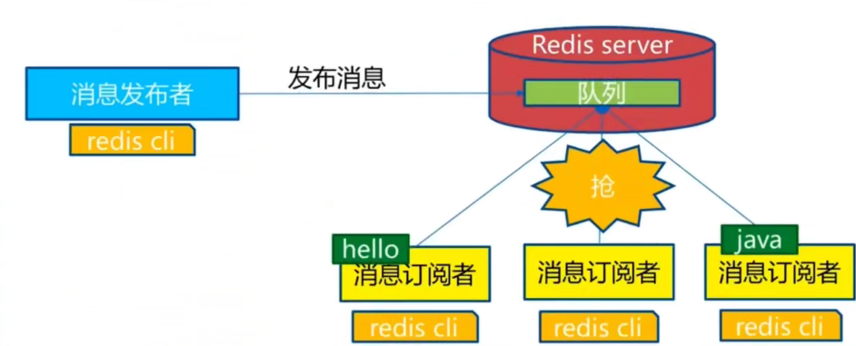
命令
原理
Redis是使用C实现的，通过分析Redis源码里的pubsub.c文件，了解发布和订阅机制的底层实现，籍此加深对Redis的理解。
Redis通过PUBLISH、SUBSCRIBE和PSUBSCRIBE等命令实现发布和订阅功能。
通过SUBSCRIBE命令订阅某频道后，redis-server里维护了一个字典，字典的键就是一个个channel，而字典的值则是一个链表，链表中保存了所有订阅这个channel 的客户端。SUBSCRIBE命令的关键，就是将客户端添加到给定channel的订阅链表中。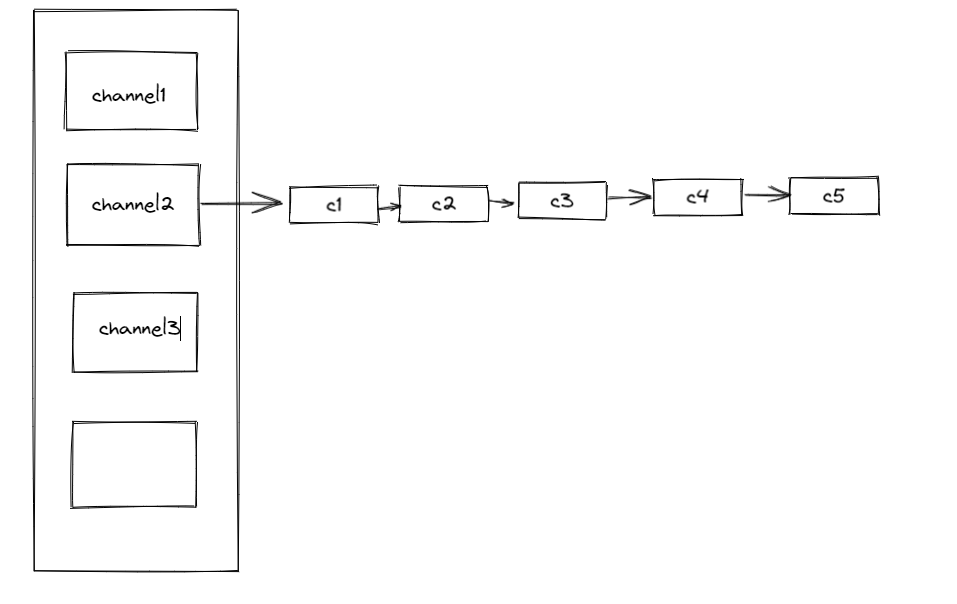
通过PUBLISH命令向订阅者发送消息，redis-server会使用给定的频道作为键，在它所维护的channel字典中查找记录了订阅这个频道的所有客户端的链表，遍历这个链表，将消息发布给所有订阅者。
Pub/Sub从字面上理解就是发布( Publish )与订阅( Subscribe )，在Redis中，你可以设定对某一个key值进行消息发布及消息订阅，当一个key值上进行了消息发布后，所有订阅它的客户端都会收到相应的消息。这一功能最明显的用法就是用作实时消息系统，比如普通的即时聊天，群聊等功能。
使用场景：
1、实时消息系统！
2、实时聊天！（频道当做聊天室，将信息回显给所有人）
3、订阅、关注系统
复杂场景 一般 使用消息中间件 MQ
Redis 主从复制
概念
主从复制，是指将一台Redis服务器的数据，复制到其他的Redis服务器。前者称为主节点(master/leader)，后者称为从节点(slave/follower);数据的复制是单向的，只能由主节点到从节点。Master以写为主，Slave以读为主。
默认情况下，每台Redis服务器都是主节点;且一个主节点可以有多个从节点(或没 有从节点)，但一个从节点只能有一个主节点。
主从复制的作用主要包括:
1、数据冗余︰主从复制实现了数据的热备份，是持久化之外的一种数据冗余方式。
2、故障恢复∶当主节点出现问题时，可以由从节点提供服务，实现快速的故障恢复;实际上是一种服务的冗余。
3、负载均衡∶在主从复制的基础上，配合读写分离，可以由主节点提供写服务，由从节点提供读服务（即写Redis数据时应用连接主节点，读Redis数据时应用连接从节点），分担服务器负载﹔尤其是在写少读多的场景下，通过多个从节点分担读负载，可以大大提高Redis服务器的并发量。
4、高可用基石︰除了上述作用以外，主从复制还是哨兵和集群能够实施的基础，因此说主从复制是Redis高可用的基础。
一般来说，要将Redis运用于工程项目中，只使用一台Redis是万万不能的，原因如下:
1、从结构上，单个Redis服务器会发生单点故障，并且一台服务器需要处理所有的请求负载，压力较大;
2、从容量上，单个Redis服务器内存容量有限，就算一台Redis服务器内存容量为256G，也不能将所有内存用作Redis存储内存-，一般来说，单台Redis最大使用内存不应该超过20G。
电商网站上的商品，一般都是一次上传，无数次浏览的，说专业点也就是"多读少写"。
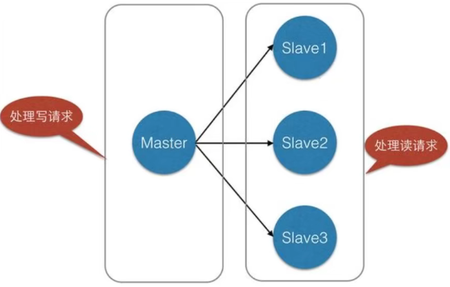
主从复制，读写分离！80%的情况下都是在进行读操作，减缓服务器的压力，架构中经常使用，一主二从。
环境配置
只配置从库，不用配置主库！
info replication # 查看当前库的信息
127.0.0.1:6379> info replication
# Replication
role:master
connected_slaves:0
master_failover_state:no-failover
master_replid:2f7713b8a336e8d3f405a21954d8491e88aec18e
master_replid2:0000000000000000000000000000000000000000
master_repl_offset:0
second_repl_offset:-1
repl_backlog_active:0
repl_backlog_size:1048576
repl_backlog_first_byte_offset:0
repl_backlog_histlen:0
此处采用伪集群，用三个redis进程来模拟
配置文件修改过程：
1、修改端口
2、修改pidfile （进程）
3、修改logfile （日志）
4、修改dbfilename （rdb）
根据不同配置文件启动三个redis进程
一主二从
默认情况下，每台Redis服务器都是主节点; 我们一般情况下只用配置从机就好了!
配置从机：
SLAVEOF ip port # 认主，找主机
真实的从主配置应该在配置文件中配置，这样的话是永久的，我们这里使用的是命令，暂时的。
配置文件：
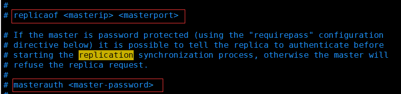
细节
- 主机可以写，从机不能写只能读 ! 主机中的所有信息和数据，都会自动被从机保存 !
- 主机断开连接，从机依旧连接到主机的，但是没有写操作，这个时候，主机如果回来了，从机依旧可以直接获取到主机写的信息!
- 如果是使用命令行，来配置的主从，这个时候如果重启，就会变成主机。只要变为从机，立马就会从主机中获取值
复制原理
Slave启动战功连接到 master 后会发送一个 sync 同步命令
Master接到命令，启动后台的存盘进程，同时收集所有接收到的用于修改数据集命令，在后台进程执行完毕之后，master将传送整个数据文件到slave，并完成一次完全同步。
全量复制 : 而slave服务在接收到数据库文件数据后，将其存盘并加载到内存中。
增量复制 : Master继续将新的所有收集到的修改命令依次传给slave，完成同步
但是只要是重新连接master，一次完全同步（全量复制)将被自动执行，我们的数据一定可以在从机上面看到
主机宕机
从机可以 “谋朝篡位” ，自己又当主机
slaveof no one
此时主机再恢复，主机下也没有此从机了。
哨兵模式
（自动选择老大的模式）
概述
主从切换技术的方法是︰当主服务器宕机后，需要手动把一台从服务器切换为主服务器，这就需要人工干预，费事费力，还会造成一段时间内服务不可用。这不是一种推荐的方式，更多时候，我们优先考虑哨兵模式。Redis从2.8开始正式提供了Sentinel (哨兵）架构来解决这个问题。
谋朝篡位的自动版，能够后台监控主机是否故障，如果故障了根据投票数自动将从库转换为主库。
哨兵模式是一种特殊的模式，首先Redis提供了哨兵的命令，哨兵是一个独立的进程，作为进程，它会独立运行。其原理是哨兵通过发送命令，等待Redis服务器响应，从而监控运行的多个Redis实例。
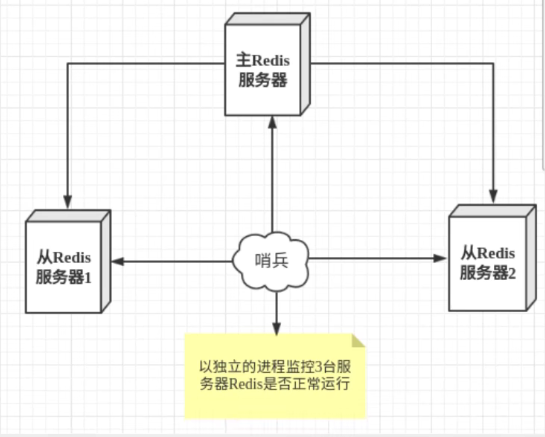
这里的哨兵有两个作用
- 通过发送命令，让Redis服务器返回监控其运行状态，包括主服务器和从服务器。
- 当哨兵监测到master宕机，会自动将slave切换成master，然后通过发布订阅模式通知其他的从服务器，修改配置文件，让它们切换主机。
然而一个哨兵进程对Redis服务器进行监控，可能会出现问题，为此，我们可以使用多个哨兵进行监控。各个哨兵之间还会进行监控，这样就形成了多哨兵模式。
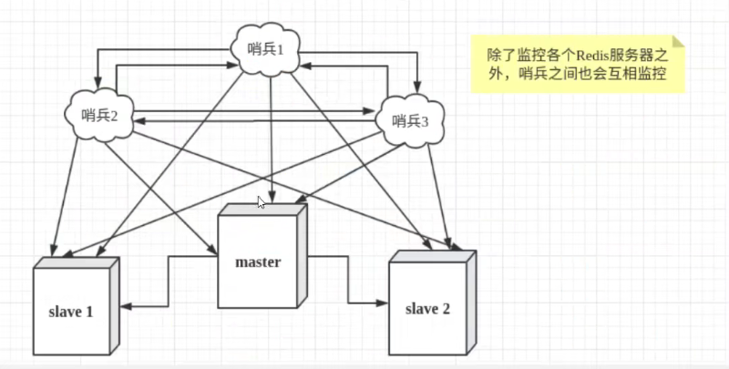
假设主服务器宕机，哨兵1先检测到这个结果，系统并不会马上进行failover过程，仅仅是哨兵1主观的认为主服务器不可用，这个现象成为主观下线、当后面的哨兵也检测到主服务器不可用，并且数量达到一定值时，那么哨兵之间就会进行一次投票，投票的结果由一个哨兵发起了进行failover[故障转移]操作。切换成功后，就会通过发布订阅模式，让各个哨兵把自己监控的从服务器实现切换主机，这个过程称为客观下线
测试
1、配置哨兵配置文件sentinel.conf
# sentinel monitor 被监控的名称 ip port 1
sentinel monitor myredis 127.0.0.1 6379 1
后面的这个数字1，代表主机挂了，slave投票看让谁接替成为主机，票数最多的，就会成为主机。
“1”指明当有1个sentinel认为一个master失效时，master才算真正失效
2、启动哨兵
redis-sentinel myconf/sentinel.conf
主机宕机后，哨兵会自动投票选举一个新的从机作为主机；
当主机恢复后，只能归并到新的主机下，当做从机，这就是哨兵模式的规则。
优缺点
优点：
1、哨兵集群，基于主从复制模式，所有的主从配置优点，它全有
2、主从可以切换，故障可以转移，系统的可用性更好
3、哨兵模式就是主从模式的升级，手动到自动，更加健壮
缺点：
1、Redis 不好在线扩容，集群容量一旦到达上限，在线扩容就十分麻烦
2、实现哨兵模式的配置其实很麻烦，里面有很多选择
Redis 缓存穿透和雪崩
（面试高频，工作常用）
Redis缓存的使用，极大的提升了应用程序的性能和效率，特别是数据查询方面。但同时，它也带来了一些问题。其中，最要害的问题，就是数据的一致性问题，从严格意义上讲，这个问题无解。如果对数据的一致性要求很高，那么就不能使用缓存。
另外的一些典型问题就是，缓存穿透、缓存雪崩和缓存击穿。目前，业界也都有比较流行的解决方案。
缓存穿透（查不到）
概念
缓存穿透的概念很简单，用户想要查询一个数据，发现redis内存数据库没有，也就是缓存没有命中，于是向持久层数据库（MySQL）查询。发现也没有，于是本次查询失败。当用户很多的时候，缓存都没有命中（秒杀场景！），于是都去请求了持久层数据库。这会给持久层数据库造成很大的压力，这时候就相当于出现了缓存穿透。
解决方案
1、布隆过滤器
布隆过滤器是一种数据结构，对所有可能查询的参数以hash形式存储，在控制层先进行校验，不符合则丢弃，从而避免了对底层存储系统的查询压力;
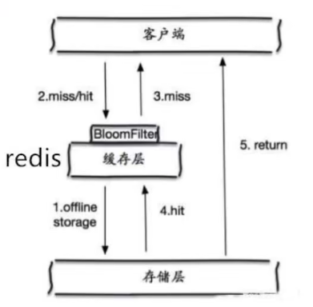
2、缓存空对象
当存储层不命中后，即使返回的空对象也将其缓存起来，同时会设置一个过期时间，之后再访问这个数据将会从缓存中获取，保护了后端数据源;
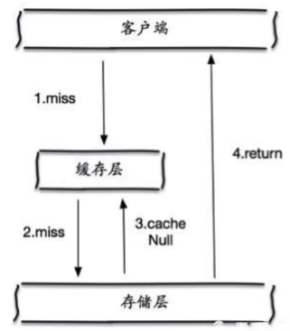
但是这种方法会存在两个问题∶
1、如果空值能够被缓存起来，这就意味着缓存需要更多的空间存储更多的键，因为这当中可能会有很多的空值的键;
2、即使对空值设置了过期时间，还是会存在缓存层和存储层的数据会有一段时间窗口的不一致，这对于需要保持一致性的业务会有影响。
缓存击穿（量太大）
概述
这里需要注意和缓存击穿的区别，缓存击穿，是指一个key非常热点，在不停的扛着大并发，大并发集中对这一个点进行访问，当这个key在失效的瞬间，持续的大并发就穿破缓存，直接请求数据库，就像在一个屏障上凿开了一个洞。
当某个key在过期的瞬间，有大量的请求并发访问，这类数据一般是热点数据，由于缓存过期，会同时访问数据库来查询最新数据，并且回写缓存，会导使数据库瞬间压力过大。
解决方案
1、设置热点数据永不过潮
从缓存层面来看，没有设置过期时间，所以不会出现热点 key过期后产生的问题。
2、加互斥锁
分布式锁︰使用分布式锁，保证对于每个key同时只有一个线程去查询后端服务，其他线程没有获得分布式锁的权限，因此只需要等待即可。这种方式将高并发的压力转移到了分布式锁，因此对分布式锁的考验很大。
缓存雪崩
概念
缓存雪崩，是指在某一个时间段，缓存集中过期失效。
产生雪崩的原因之一，比如在写本文的时候，马上就要到双十二零点，很快就会迎来一波抢购，这波商品时间比较集中的放入了缓存，假设缓存一个小时。那么到了凌晨一点钟的时候，这批商品的缓存就都过期了。而对这批商品的访问查询，都落到了数据库上，对于数据库而言，就会产生周期性的压力波峰。于是所有的请求都会达到存储层，存储层的调用量会暴增，造成存储层也会挂掉的情况。
解决方案
1、redis高可用
这个思想的含义是，既然redis有可能挂掉，那我多增设几台redis ，这样一台挂掉之后其他的还可以继续工作，其实就是搭建的集群。（异地多活）
2、限流降级
这个解决方案的思想是，在缓存失效后，通过加锁或者队列来控制读数据库写缓存的线程数量。比如对某个key只允许一个线程查询数据和写缓存，其他线程等待。
3、数据预热
数据加热的含义就是在正式部署之前，我先把可能的数据先预先访问一遍，这样部分可能大量访问的数据就会加载到缓存中。在即将发生大并发访问前手动触发加载缓存不同的key，设置不同的过期时间，让缓存失效的时间点尽量均匀。